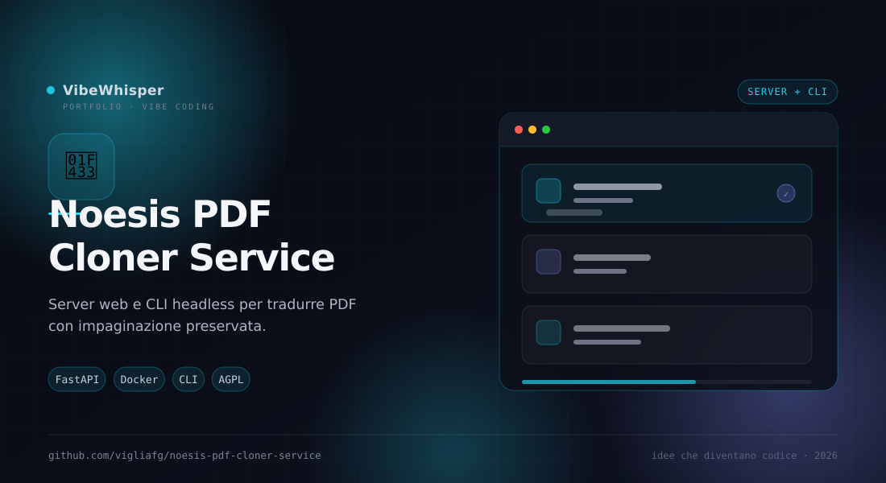

Noesis PDF Cloner Service
Server web e CLI headless della pipeline di Noesis PDF Cloner: carichi un PDF, scegli le pagine e scarichi la versione tradotta con lo stesso layout.
📖 Cos'è
Noesis PDF Cloner Service porta la pipeline di traduzione PDF con layout preservato su una macchina, in LAN o in un container. Ha due anime: un'interfaccia web con drag&drop per scegliere pagine, lingua e motore, e una CLI headless per lavorare su molti PDF in blocco. Il risultato è un PDF unico con le pagine tradotte oppure uno ZIP con le pagine singole; il motore è pdf2zh_next v2 (BabelDOC) con Google, Bing o LLM via OpenRouter.
👤 A chi serve
È la scelta giusta per team, laboratori e utenti avanzati che vogliono un servizio condiviso invece di un'app desktop: un computer sulla rete traduce per tutti, oppure una pipeline automatica processa una cartella di documenti. Utile anche per chi lavora su server senza interfaccia grafica e vuole la stessa resa del progetto desktop.
⚙️ Come funziona
Il servizio espone una web UI e un'API; i lavori entrano in una coda a priorità e vengono eseguiti da worker. All'avvio misura CPU, RAM e disco (anche i limiti del container) e regola da solo il parallelismo; se la macchina è sotto pressione, rifiuta temporaneamente nuovi lavori invece di crollare. Le pagine sono lavorate a blocchi da 100, così anche volumi di migliaia di pagine procedono. La cache è condivisa e versionata tra server e CLI. La distribuzione avviene come immagine Docker multi-arch su GHCR, con motore e asset inclusi.
🎯 Perché Noesis PDF Cloner Service
Perché la traduzione di PDF è un carico di lavoro, non un clic. Il servizio separa chi riceve i lavori da chi li esegue, mette in cache ciò che è già stato fatto e si adatta alla macchina: puoi partire da un container e aggiungere worker quando serve.
✨ Caratteristiche Principali
- Web UI + CLI — Drag&drop nel browser per un lavoro veloce, comandi e batch per l'automazione
- Selezione pagine — Pagina singola, intervallo, lista (
3,5,10-12) o tutto il libro (all) - PDF o ZIP — Un PDF unico con le pagine tradotte oppure pagine singole in un archivio
- Anteprima anti-errore — Miniatura con numero fisico e numero stampato, perché nei PDF spesso non coincidono
- Stima prima dell'avvio — Tempo e costo (per LLM) calcolati prima di partire e mostrati nel browser
- Coda e streaming — Più lavori in coda, log completi e avanzamento in tempo reale
- Autosizing — Parallelismo regolato su CPU, RAM e disco; guardie che proteggono il servizio
- Scala — API e worker separabili, con worker aggiungibili anche su più macchine
- Docker pronto — Immagine
linux/amd64elinux/arm64su GHCR, tutto incluso
🏗️ Come Funziona
- Avvia il container o il server locale e apri l'interfaccia web
- Carica il PDF e scegli le pagine: controlla l'anteprima con numero fisico e stampato
- Imposta lingua di origine e destinazione, motore e formato di output
- Avvia il lavoro e segui l'avanzamento in tempo reale; le pagine già in cache sono immediate
- Scarica il PDF tradotto o lo ZIP delle pagine singole
- Per i batch, usa la CLI con
run-cli.she gli stessi parametri
📦 Installazione
# Metodo più semplice: Docker (Linux, Windows, macOS) docker run -d --name noesis -p 18080:18080 -v noesis-data:/data \ ghcr.io/vigliafg/noesis-pdf-cloner-service:latest # Apri http://localhost:18080 # Con motore LLM (Google e Bing non richiedono chiave) docker run -d --name noesis -p 18080:18080 -v noesis-data:/data \ -e OPENROUTER_API_KEY="sk-or-..." \ ghcr.io/vigliafg/noesis-pdf-cloner-service:latest # Da sorgente ./setup_engine.sh ./run.sh # server su http://127.0.0.1:18080 # CLI headless ./run-cli.sh pdfs/libro.pdf -p 100-103 --src en --dst it --engine google \ --output libro_it --range-mode merged
💡 Casi d'Uso
- Servizio di laboratorio — Un computer in LAN che traduce per tutti, senza installare nulla sui client
- Batch di documenti — Processare una cartella di PDF con un solo comando e la cache condivisa
- Pipeline automatiche — Integrare la traduzione in un flusso di pubblicazione o di archiviazione
- Server senza GUI — Usare Docker o la CLI su una macchina headless